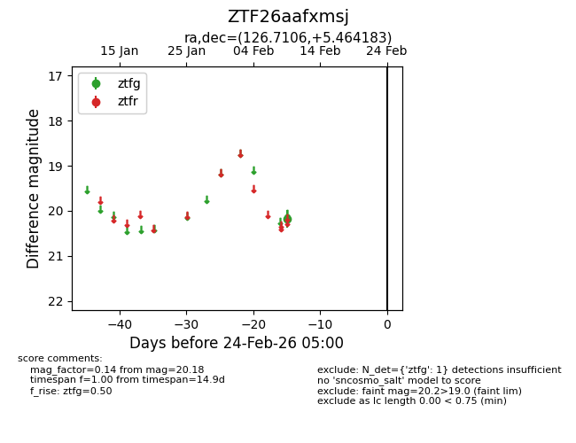
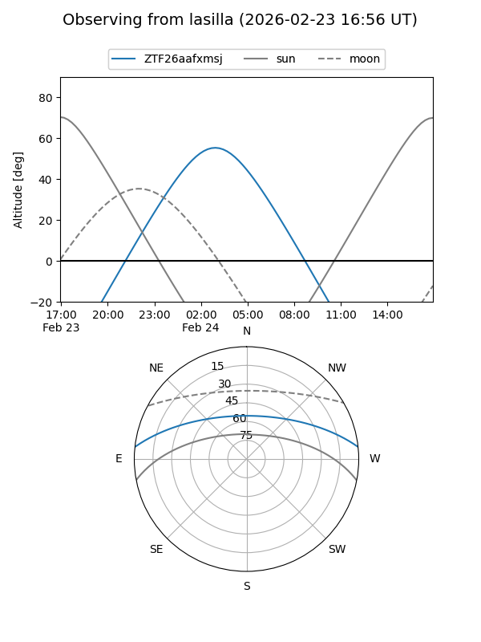
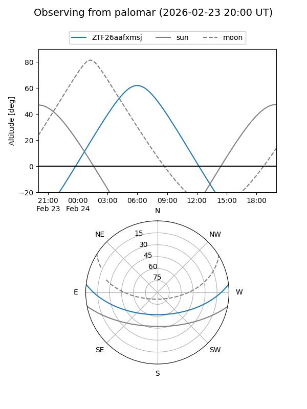

ZTF26aafxmsj
Target ZTF26aafxmsj at 2026-02-24 09:08
Aliases and brokers:
FINK: link
Lasair: link
ALeRCE: link
alt names
ZTF26aafxmsj (ztf,fink_ztf)
Coordinates:
equatorial (ra, dec) = 126.7106,+5.46418
equatorial (HMS+DMS) = 08:26:50.53,+05:27:51.06
galactic (l, b) = (219.1251,+23.68208)
Flags:
Photometry:
last ztfg=20.18
1 ztfg detections
Lightcurve

Visibility


Additional plots